خواجه نصیرالدین طوسی
ریاضیدان، منجم، فیلسوف و پیشگام روش علمی
۱۲۰۱ — ۱۲۷۴ میلادی

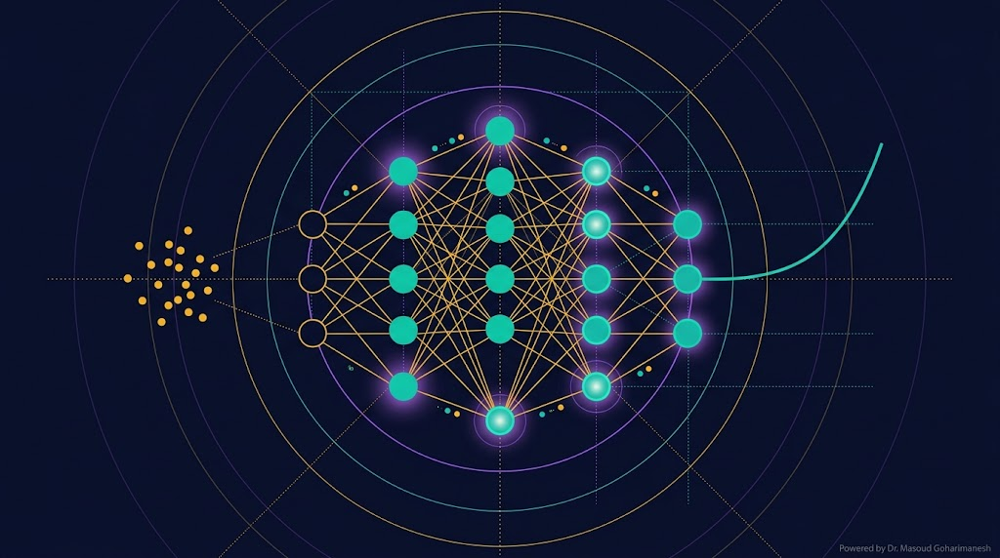
(Introduction to Machine Learning) — جلسه ۱۷ | شروع فاز ۵
دکتر مسعود گوهری منش
دانشیار گروه مهندسی مکانیک — دانشگاه تربت حیدریه
در دنیای امروز، مهندس مکانیک و مکاترونیک فقط با روشهای کلاسیک کار نمیکند. **یادگیری ماشین** ابزار جدیدی است که:
• مسائل غیرخطی پیچیده را بدون فرمول بسته حل میکند
• از دادههای تجربی الگو استخراج میکند
• با فیزیک (PDE) ترکیب میشود → PINN
• به کنترل هوشمند، طراحی معکوس، و بهینهسازی کمک میکند
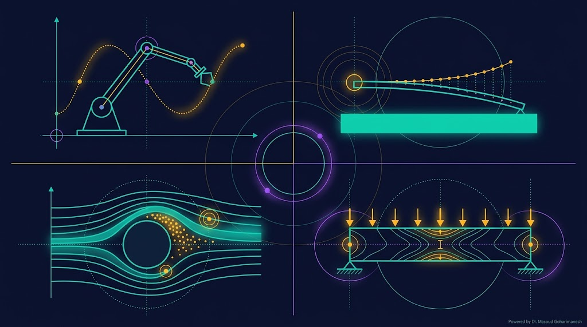
کنترل هوشمند، مسیریابی
پیشبینی رفتار نانو انبرک
شبیهسازی سریع جریان
پیشبینی تنش و شکست
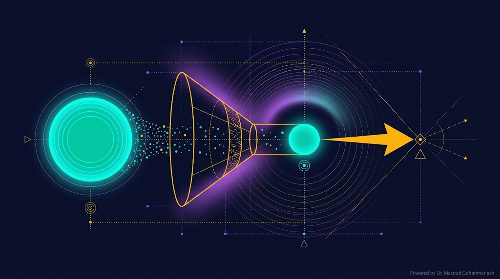
تعریف رسمی Tom Mitchell (۱۹۹۷):
«برنامهای گفته میشود که از تجربه E، در انجام وظیفه T، با معیار عملکرد P یاد میگیرد، اگر عملکردش در T، با معیار P، با افزایش E بهتر شود.»
— Tom M. Mitchell, Machine Learning, McGraw Hill, 1997
دادههای آموزشی
وظیفه (پیشبینی، طبقهبندی)
معیار عملکرد (دقت، خطا)
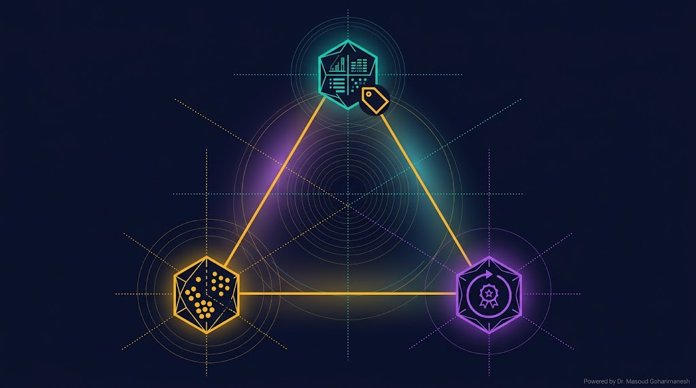
داده با برچسب (Labeled Data)
Regression + Classification
داده بدون برچسب
Clustering + Dim Reduction
یادگیری از پاداش و جریمه
Agent + Environment
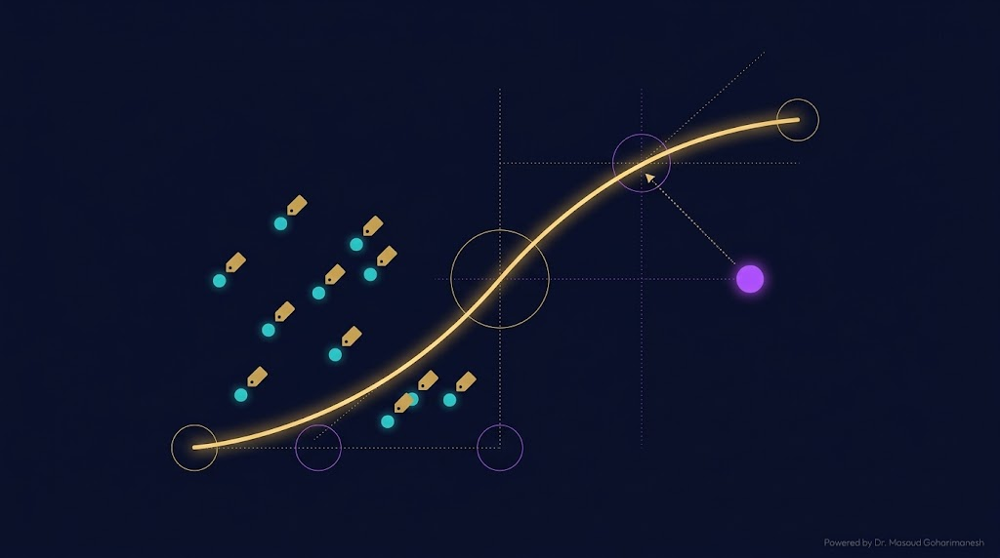
در این نوع یادگیری، دادههای آموزشی شامل **ورودی** و **خروجی مطلوب** هستند. مدل باید نگاشت بین آنها را یاد بگیرد:
$x$ = ورودی (feature) | $y$ = خروجی (label) | $\theta$ = پارامترهای مدل | $\epsilon$ = نویز
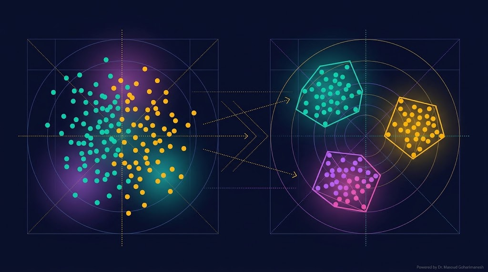
در این نوع یادگیری، دادهها **برچسب ندارند**. مدل باید خودش ساختار پنهان داده را کشف کند.
دستهبندی دادهها به گروههای مشابه (K-Means، DBSCAN).
کاهش ابعاد داده با حفظ اطلاعات (PCA، t-SNE، Autoencoder).
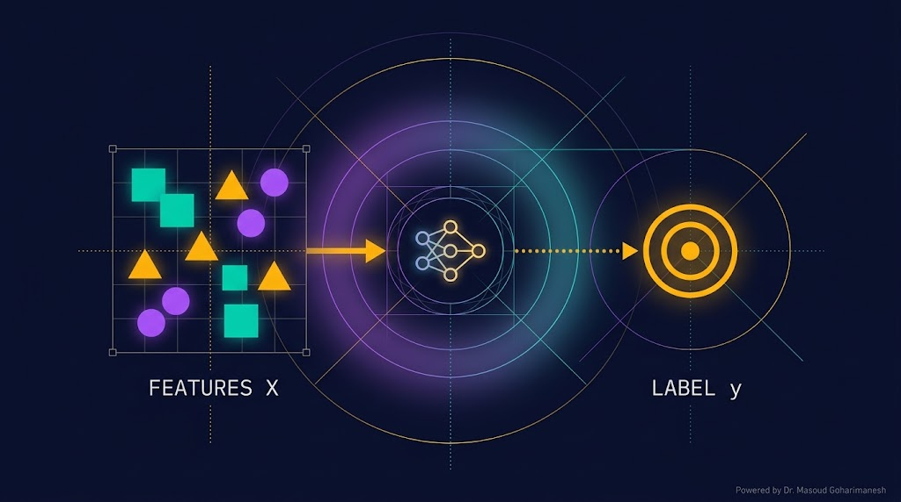
ویژگیهای ورودی — چیزی که به مدل میدهیم.
در نانو انبرک: $[L, b, h, E, V, g]$
خروجی مطلوب — چیزی که میخواهیم پیشبینی کنیم.
در نانو انبرک: $w_{max}$ یا $V_{pull-in}$
مجموعه جفتهای (x، y).
$\mathcal{D} = \{(x^{(i)}, y^{(i)})\}_{i=1}^{N}$
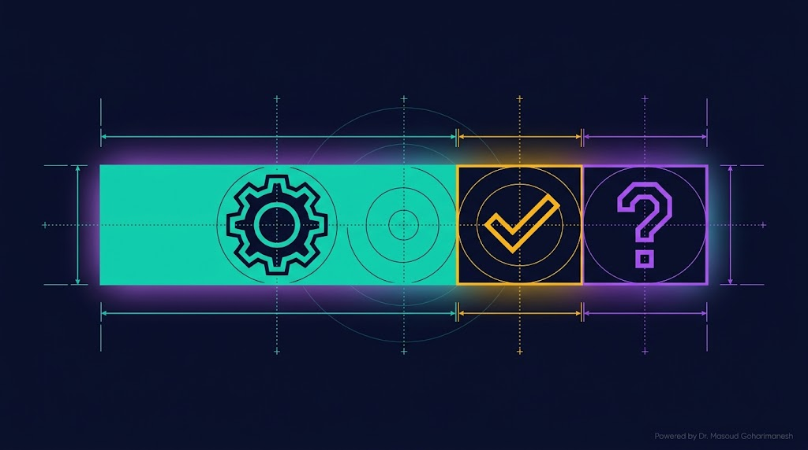
برای آموزش مدل. مدل پارامترهایش را با این داده تنظیم میکند.
برای تنظیم hyperparameter ها. انتخاب بهترین مدل.
برای ارزیابی نهایی. هرگز در آموزش استفاده نمیشود.
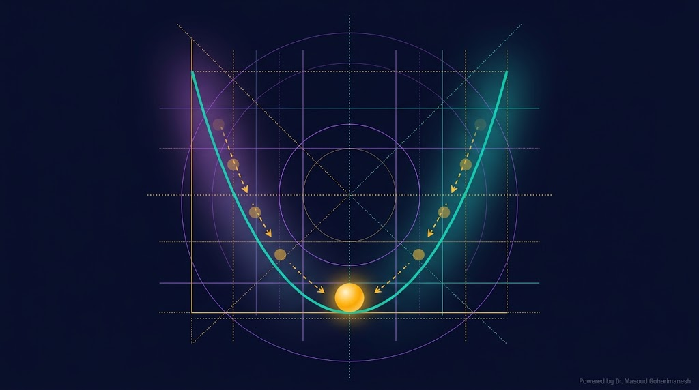
Loss function معیاری است که نشان میدهد مدل چقدر از پاسخ درست فاصله دارد. هدف: کمینهسازی Loss.
میانگین مربع خطا — پرکاربردترین برای پیشبینی مقادیر پیوسته.
برای طبقهبندی — فاصله بین توزیع واقعی و پیشبینیشده.
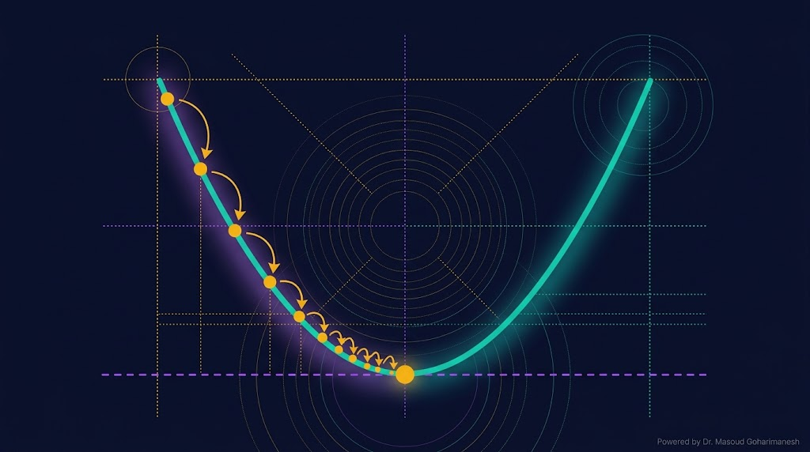
الگوریتم اصلی بهینهسازی در ML: حرکت در جهت **منفی گرادیان** (سرازیری):
$\eta$ = learning rate | $\nabla_\theta \mathcal{L}$ = گرادیان Loss نسبت به پارامترها
همه داده در هر گام
یک نمونه در هر گام
دسته کوچک — استاندارد
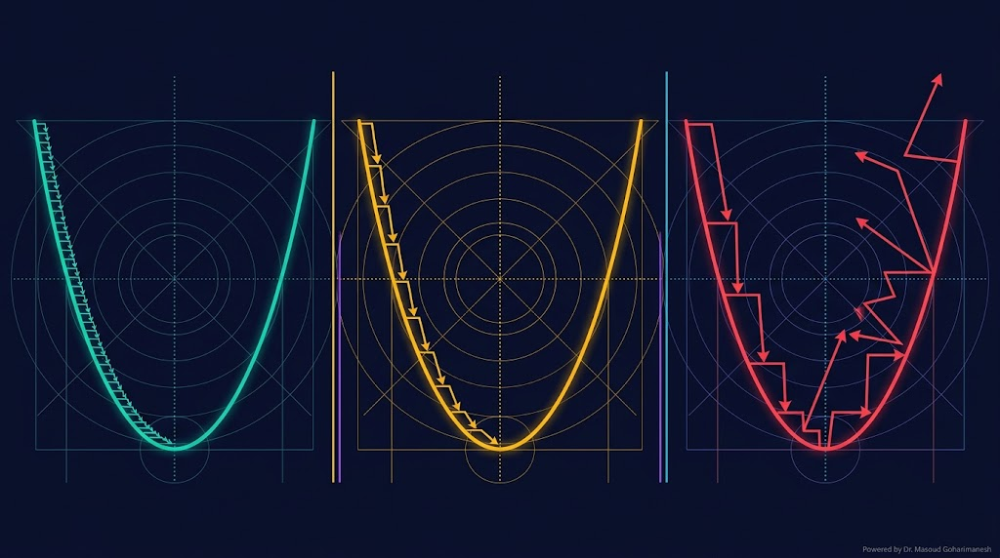
Learning rate ($\eta$) یکی از مهمترین hyperparameterها است. انتخاب درست آن، تفاوت بین موفقیت و شکست آموزش است.
آموزش بسیار کند، احتمال گیر افتادن در local minimum.
مثال: $\eta < 10^{-4}$
آموزش سریع و پایدار.
مثال: $\eta \in [10^{-3}، 10^{-2}]$
نوسان، انفجار گرادیان، عدم همگرایی.
مثال: $\eta > 0.1$
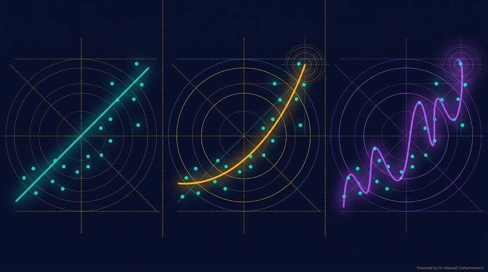
مدل خیلی ساده است، نمیتواند الگوی داده را یاد بگیرد.
مدل خیلی پیچیده است، حتی نویز را یاد میگیرد.
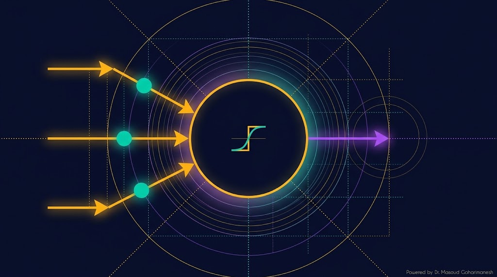
سادهترین واحد شبکه عصبی، Perceptron است که از زیستشناسی نرونهای مغز الهام گرفته:
$w_i$ = وزنها | $b$ = بایاس | $\sigma$ = تابع فعالسازی
اهمیت هر ورودی
آستانه فعالسازی
غیرخطیسازی
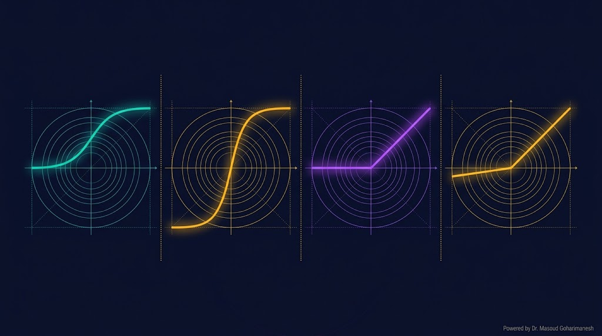
خروجی [۰، ۱]
خروجی [-۱، ۱]
پرکاربردترین در DL
رفع مشکل dead neuron
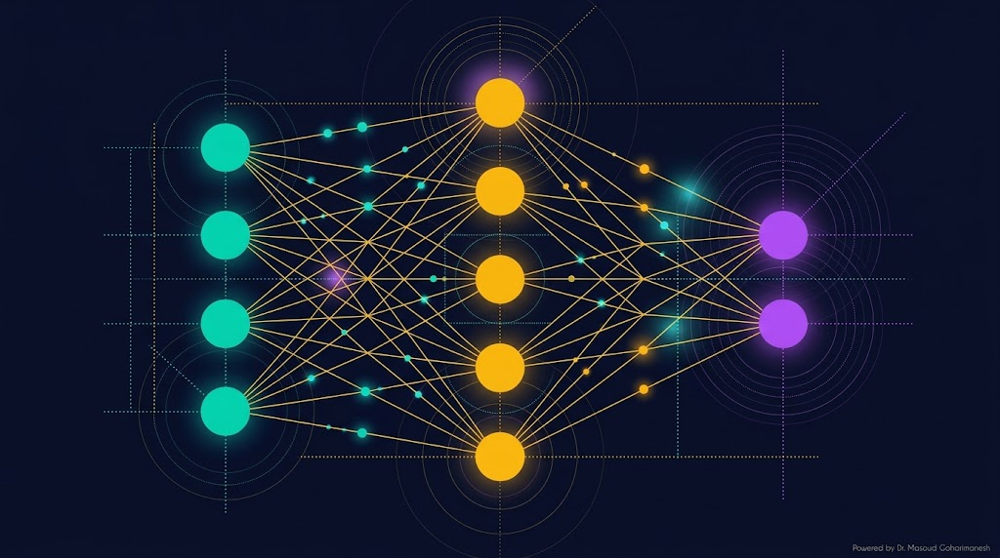
شبکه عصبی، ترکیب چند لایه از نرونها است که بهصورت موازی و ترتیبی کار میکنند:
دریافت ورودیها. تعداد نرونها = تعداد features.
در نانو انبرک: ۶ نرون
لایههای میانی که ویژگیهای پیچیده را استخراج میکنند.
مثال: ۲ لایه × ۳۲ نرون
تولید خروجی نهایی.
در نانو انبرک: ۱ نرون ($w_{max}$)
Forward propagation — انتشار رو به جلو
یک شبکه عصبی ساده برای پیشبینی Pull-in Voltage نانو انبرک را با هر دو کتابخانه میسازیم.
# ============================================ # Neural Network from scratch with NumPy # ============================================ import numpy as np # --- داده مصنوعی: پیشبینی V_pull-in نانو انبرک --- # Features: [L, b, h, E, g] # Label: V_pull-in np.random.seed(42) N_samples = 500 L = np.random.uniform(30e-6, 100e-6, N_samples) b = np.random.uniform(3e-6, 10e-6, N_samples) h = np.random.uniform(0.3e-6, 1.5e-6, N_samples) E = np.random.uniform(100e9, 200e9, N_samples) g = np.random.uniform(100e-9, 400e-9, N_samples) eps0 = 8.854e-12 I = b * h**3 / 12 k_eq = 8 * E * I / L**4 V_pullin = np.sqrt(8 * k_eq * g**3 / (27 * eps0 * b * L)) # --- نرمالسازی داده --- X = np.stack([L, b, h, E, g], axis=1) X_mean, X_std = X.mean(0), X.std(0) X_norm = (X - X_mean) / X_std y_mean, y_std = V_pullin.mean(), V_pullin.std() y_norm = (V_pullin - y_mean) / y_std # --- معماری شبکه --- def init_params(n_in, n_h1, n_h2, n_out): return { 'W1': np.random.randn(n_in, n_h1) * 0.1, 'b1': np.zeros((1, n_h1)), 'W2': np.random.randn(n_h1, n_h2) * 0.1, 'b2': np.zeros((1, n_h2)), 'W3': np.random.randn(n_h2, n_out) * 0.1, 'b3': np.zeros((1, n_out)), } def relu(x): return np.maximum(0, x) def forward(X, params): z1 = X @ params['W1'] + params['b1'] a1 = relu(z1) z2 = a1 @ params['W2'] + params['b2'] a2 = relu(z2) z3 = a2 @ params['W3'] + params['b3'] return z3, (z1, a1, z2, a2, z3) # --- Loss (MSE) --- def mse_loss(y_true, y_pred): return np.mean((y_true - y_pred)**2) # --- آموزش --- params = init_params(5, 32, 16, 1) lr = 0.01 epochs = 200 losses = [] for epoch in range(epochs): # Forward pass y_pred, cache = forward(X_norm, params) loss = mse_loss(y_norm.reshape(-1, 1), y_pred) losses.append(loss) # Backward pass (شبکه ساده، گرادیان دستی) N = X_norm.shape[0] dz3 = 2 * (y_pred - y_norm.reshape(-1, 1)) / N dW3 = cache[3].T @ dz3 db3 = dz3.sum(0, keepdims=True) da2 = dz3 @ params['W3'].T dz2 = da2 * (cache[2] > 0) dW2 = cache[1].T @ dz2 db2 = dz2.sum(0, keepdims=True) da1 = dz2 @ params['W2'].T dz1 = da1 * (cache[0] > 0) dW1 = X_norm.T @ dz1 db1 = dz1.sum(0, keepdims=True) # Update params['W3'] -= lr * dW3 params['b3'] -= lr * db3 params['W2'] -= lr * dW2 params['b2'] -= lr * db2 params['W1'] -= lr * dW1 params['b1'] -= lr * db1 if epoch % 20 == 0: print(f'Epoch {epoch}, Loss = {loss:.6f}') print(f'Final Loss: {losses[-1]:.6f}')
# ============================================ # Neural Network with PyTorch # ============================================ import torch import torch.nn as nn import torch.optim as optim import numpy as np # --- داده مصنوعی --- np.random.seed(42) N_samples = 500 L = np.random.uniform(30e-6, 100e-6, N_samples) b = np.random.uniform(3e-6, 10e-6, N_samples) h = np.random.uniform(0.3e-6, 1.5e-6, N_samples) E = np.random.uniform(100e9, 200e9, N_samples) g = np.random.uniform(100e-9, 400e-9, N_samples) eps0 = 8.854e-12 I = b * h**3 / 12 k_eq = 8 * E * I / L**4 V_pullin = np.sqrt(8 * k_eq * g**3 / (27 * eps0 * b * L)) X = np.stack([L, b, h, E, g], axis=1).astype(np.float32) y = V_pullin.astype(np.float32).reshape(-1, 1) # Normalization X_mean, X_std = X.mean(0), X.std(0) y_mean, y_std = y.mean(), y.std() X = (X - X_mean) / X_std y = (y - y_mean) / y_std # Tensor conversion X_t = torch.tensor(X) y_t = torch.tensor(y) # --- شبکه عصبی با PyTorch --- class PullInNet(nn.Module): def __init__(self): super().__init__() self.net = nn.Sequential( nn.Linear(5, 32), nn.ReLU(), nn.Linear(32, 16), nn.ReLU(), nn.Linear(16, 1) ) def forward(self, x): return self.net(x) model = PullInNet() loss_fn = nn.MSELoss() optimizer = optim.Adam(model.parameters(), lr=1e-3) # --- آموزش --- epochs = 500 losses = [] for epoch in range(epochs): model.train() y_pred = model(X_t) loss = loss_fn(y_pred, y_t) optimizer.zero_grad() loss.backward() optimizer.step() losses.append(loss.item()) if epoch % 50 == 0: print(f'Epoch {epoch}, Loss = {loss.item():.6f}') print(f'Final Loss: {losses[-1]:.6f}') # --- تست پیشبینی --- model.eval() with torch.no_grad(): X_test = X_t[:5] y_pred = model(X_test) y_pred_real = y_pred.numpy() * y_std + y_mean y_true_real = y_t[:5].numpy() * y_std + y_mean print('--- Predictions ---') for i in range(5): print(f'True: {y_true_real[i,0]:.4f} V, Pred: {y_pred_real[i,0]:.4f} V')
ارسال تمرینها:
m.goharimanesh@gmail.com
Subject الزامی:
[Advanced Engineering Mathematics] HW17 - نام و نام خانوادگی - شماره دانشجویی
امروز اولین قدم را در دنیای یادگیری ماشین برداشتید! 🌟
قلب یادگیری ماشین — گرادیان کاهشی
شبکه عصبی و Backpropagation
دکتر مسعود گوهری منش
دانشیار گروه مهندسی مکانیک — دانشگاه تربت حیدریه
🇮🇷 با افتخار برای دانشجویان مکاترونیک 🇮🇷
یادگیری ماشین ریشه در همان مفهومی دارد که خواجه نصیرالدین طوسی در قرن هفتم هجری در «زیج ایلخانی» بهکار برد: استخراج الگو از دادههای مشاهدهای.
او با ثبت دقیق موقعیت سیارات در طول سالها، توانست الگوهای حرکت آنها را کشف کند و آینده را پیشبینی نماید — همان کاری که امروز ML با میلیونها داده انجام میدهد.
یادگیری فقط یک مفهوم ریاضی نیست — یک مفهوم انسانی و اجتماعی است. خواجه نصیرالدین طوسی در «اساس الاقتباس» نشان داد که علم، آموختنی است و میتوان از مثال به قاعده رسید.
این همان اصل یادگیری ماشین است: مدل از مثالهای آموزشی، قاعده استخراج میکند و آن را به مثالهای جدید تعمیم میدهد. تفاوت امروز در سرعت و مقیاس است — میلیونها مثال در ثانیه.
در قرن ۱۳ میلادی، خواجه نصیرالدین طوسی رصدخانه مراغه را تأسیس کرد — اولین مرکز دادههای نجومی در تاریخ. در آنجا، تیمهای چندنفره از دانشمندان و مهندسان با هم کار میکردند و الگوریتمهای مشترکی برای تحلیل داده تدوین میکردند.
امروز، یادگیری ماشین همان اصل را با GPU، Cloud، و تیمهای جهانی پیادهسازی میکند — اما فلسفهی اصلی یکسان است: تعامل، تکرار، و استخراج الگو.